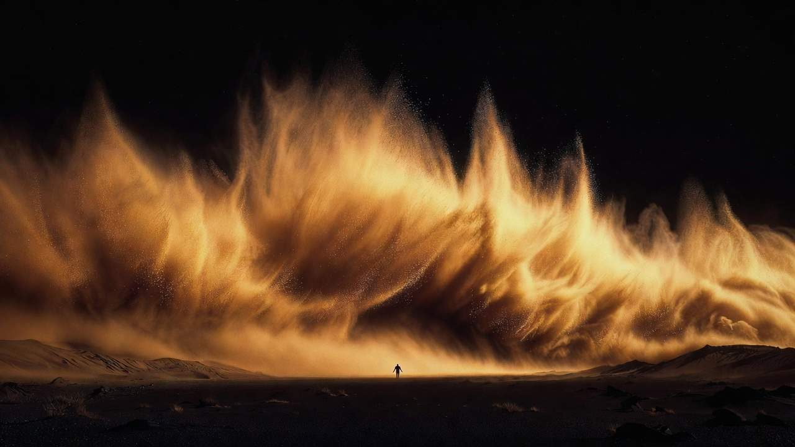
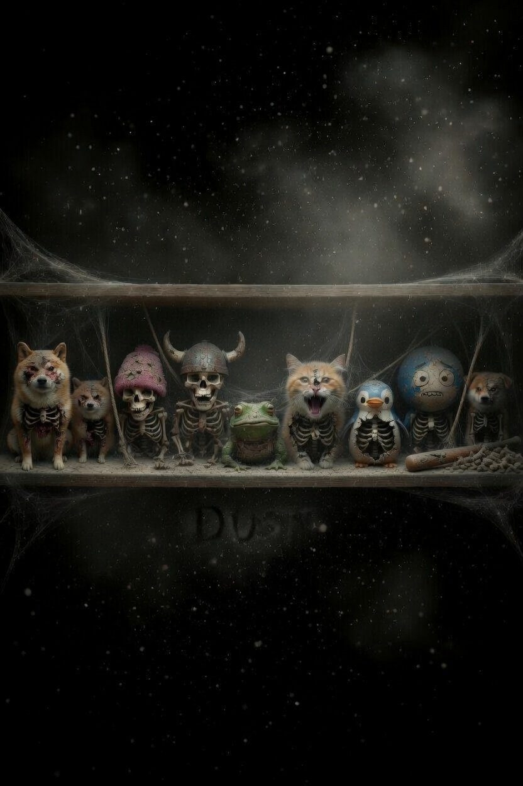
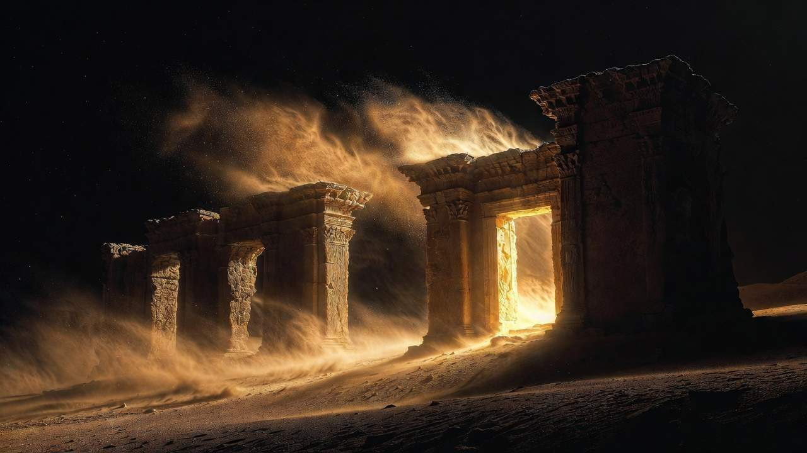
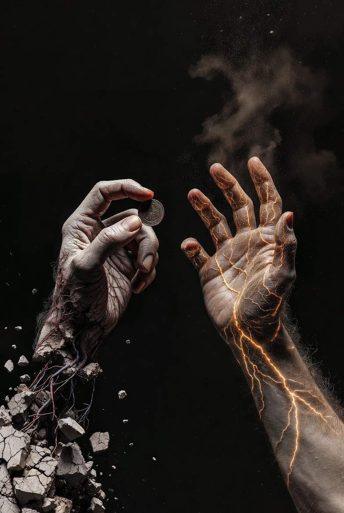
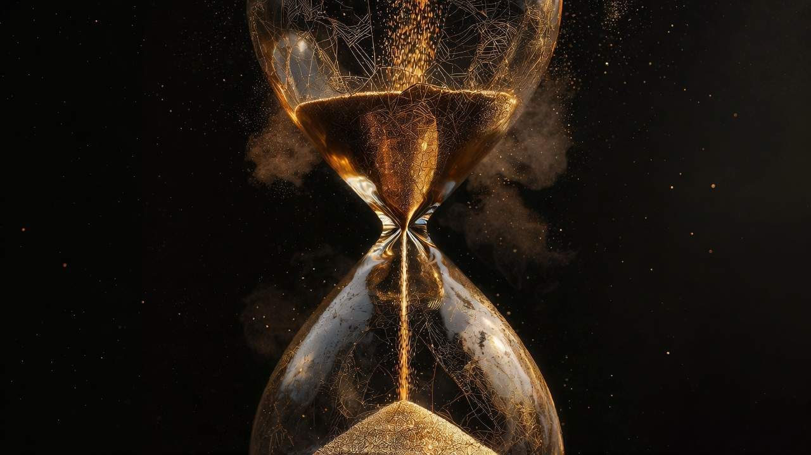
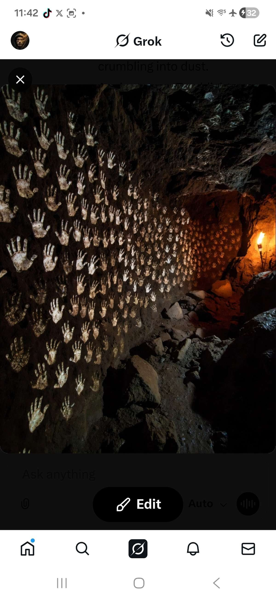
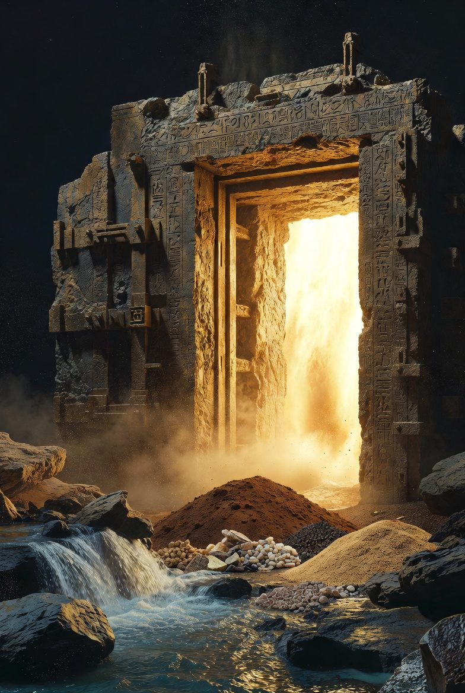
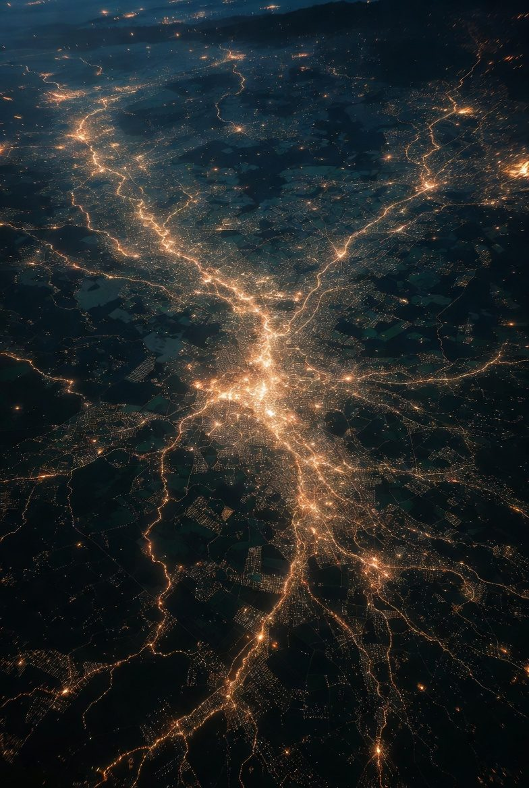
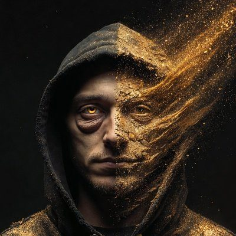

You were here. You were unique. Now prove you are still moving.

In 1932, a small Austrian town called Wörgl was dying. Unemployment had reached 30%. The economy had stopped moving. Money existed but nobody spent it. Everyone held what they had and waited for someone else to act first.
The mayor, Michael Unterguggenberger, had an idea that most people thought was insane. He printed new money. But this money had a rule that no currency had ever carried before: it expired. Every month, the bills lost value. If you held a note without spending it, it decayed. You had to buy a stamp to restore its value.
The result was immediate and staggering. People spent money. They hired workers. They built infrastructure. Unemployment dropped dramatically in a single year while the rest of Austria continued to collapse. The town came alive because the currency demanded movement.
The Austrian central bank shut it down within 13 months. The experiment was declared illegal. The town returned to poverty.
Ninety-four years later, the same problem exists at a civilizational scale. But now the threat is not economic depression. The threat is human irrelevance.
What happens when doing nothing is no longer enough?

The modern financial system rewards one behavior above all others: doing nothing. Buy an asset. Hold it. Wait. Let other people create the value that makes your position worth more. This is the dominant economic philosophy of our time. It has a name. They call it HODL.
HODL began as a typo from a drunk Bitcoin trader in 2013. It became the defining philosophy of an entire generation of investors. Hold on for dear life. Do not sell. Do not spend. Do not move. Sit still and let the number go up.
This philosophy created extraordinary wealth for early adopters. It also created an economy of statues. Millions of people sitting motionless, watching screens, waiting for someone else to do something that makes their portfolio turn green. No creation. No circulation. No proof that anyone behind the wallet is even alive.
While humans perfected the art of sitting still, artificial intelligence perfected the art of doing everything else. AI now writes, codes, designs, trades, composes, diagnoses, and creates at a speed and scale that no human can match.
Industry leaders now predict that the vast majority of all onchain transactions will be driven by agents, bots, and automated systems within years. AI will exceed human intelligence. Infrastructure demand will displace white-collar workers en masse.
None of them are asking the follow-up question: what do the humans do after that?
If AI handles the transactions, manages the portfolios, writes the contracts, and executes the trades, what economic function remains that requires proof a human being is on the other end?
The nightmare is not AI getting smarter. The nightmare is humans having no reason to stay relevant.
Every cryptocurrency ever created decays. This is not a design flaw. It is an inevitability. Communities lose interest. Developers move on. Volume dries up. The token that promised forever quietly approaches zero while the remaining holders refuse to acknowledge what is already obvious.
Tens of millions of tokens have launched. The vast majority are dead. Not because they were poorly designed but because they had no mechanism to sustain human participation beyond speculation. Once the speculative energy fades, there is nothing left to keep people showing up.
The honest truth that no project will tell you: your token is already decaying. The only question is whether anyone told you first.

DUST begins with a single premise: what if a currency was honest about decay?
Instead of pretending your tokens last forever, DUST tells you the truth from the moment you enter. Your balance decays every day. It does not matter how much you hold. It does not matter when you bought. Time treats everyone the same. The clock is always running.
The only way to pause the decay is to prove you are still alive. Not by clicking a button. Not by solving a captcha. By showing the world that you woke up today and did something that mattered. You learned something. You built something. You helped someone. You moved your life forward in a way that no machine can fake and no algorithm can replicate.
The platform captures this proof. But the platform is not the point. The point is a generation of humans who stop scrolling, stop spectating, stop waiting for someone else to create the value they benefit from, and start living with intention every single day. DUST does not reward activity on an app. It rewards proof that you are becoming a better version of yourself and contributing to a better humanity.
This is not a gimmick. This is not gamification. This is the fundamental economic insight that Wörgl proved in 1932 and that every civilization before us understood: value comes from movement, not storage.
Genesis 3:19 says it plainly: For you are dust, and to dust you shall return.
This is not a threat. It is a description of reality. Everything decays. Everything returns to its origin. The human body, the empires we build, the currencies we create. Entropy is not a punishment. It is the natural state of all things that stop moving.
The Book of Enoch describes hollow places inside a mountain where the spirits of the dead wait. Inactive. Unmoving. Stored but not alive. Separated into light and darkness based on how they lived. The ones who moved and created and served are held in golden light. The ones who sat idle wait in shadow.
Ecclesiastes 3:20 echoes it: All go to one place. All are from the dust, and to dust all return.
Proverbs 14:23 makes the economic case: In all toil there is profit, but mere talk leads only to poverty.
James 2:17 delivers the verdict: Faith without works is dead.
DUST does not impose an artificial mechanic. It encodes a truth that already exists in scripture, in nature, in physics, and in every economy that has ever functioned. Movement creates value. Stillness creates decay. This is not philosophy. This is tokenomics derived from the oldest source code in human history.
HODL told you to sit still. MOEV tells you to prove you are alive.
HODL was born from a typo by a man who had given up on making decisions. MOEV is born from a conviction that the only decisions that matter are the ones you make every single day. Not once. Not at the moment of purchase. Every day.
MOEV is not a trading strategy. It is a life philosophy encoded into a currency. The hand that grips the coin turns to stone. The hand that moves stays alive. The idle fund the active. The dead fund the living.
The idle fund the active. The dead fund the living.
Bitcoin proved that money does not need a government. DUST proves that humans do not need permission to matter.


DUST launches on Solana as a standard memecoin. No tax. No complex mechanics. Pure meme. The narrative and community carry this phase.
This is intentional. The meme is the trojan horse. People discover DUST the same way they discover any memecoin: through curiosity, humor, and the promise of something interesting. They ape in. They share it. They meme it.
Then they read the pinned thread. They find the Wörgl story. They find Genesis 3:19. They realize this is not a joke. Hour one it looks like a meme. Hour two they understand it could change the world.
Phase 2 is not a new token. It is a staking protocol built on top of the same Phase 1 token. No migration. No new token. No split liquidity. One token. Two phases.
Users deposit their Phase 1 tokens into the DUST Protocol. This creates their account on the social platform. The decay clock begins.
Every day, your balance decays. The rate adjusts dynamically as the network grows, becoming more sustainable as more humans join the ecosystem.
Decayed tokens do not disappear. They flow into the Dust Pool, where they are redistributed to active participants and partially burned permanently. The idle fund the active. The protocol remains deflationary over time.
The Dust Pool is the engine of the entire economy. Every token that decays from an inactive wallet flows into this pool. From there it is distributed across multiple channels: rewarding daily task completion, incentivizing the most active participants, funding the humans who verify other humans, supporting governance and community initiatives, and sustaining protocol development.
This creates a self-sustaining economic loop. The lazy fund the active. Activity generates decay from others. Decay funds more activity. The cycle continues as long as humans keep showing up.
Each day, after completing all daily tasks, holders unlock the Dust Scroll: a scripture-based reflection prompt drawn from ancient texts such as Genesis, Ecclesiastes, Proverbs, James, Enoch, and Jubilees.
The Dust Scroll is not religious instruction. It is ancient wisdom reframed as a daily practice. Each prompt asks one question: what did you do today that proves you are still alive?
Faith without works is dead. Tokens without movement return to dust. Same principle. Same source code.

The DUST social platform is not a feature bolted onto a token. The token IS the platform. Depositing tokens creates your account. Withdrawing tokens deletes it. Your identity, your score, your history, your reputation are all tied to your continued presence in the ecosystem.
The platform combines the best elements of every major social network into a single, token-gated ecosystem. Customizable profiles. A feed driven by activity scores. Threaded discussions. Proof of life content. Long-form creation funded by the pool. On-chain work history. Payments and tipping. A task marketplace connecting people who need work done with people who do work.
Every interaction on the platform is economic. Posting costs nothing but attention. Voting costs tokens. Tipping resets decay for both the sender and receiver, encouraging circulation. The platform does not extract from users. It rewards the ones who keep the ecosystem alive.
Every participant has a Dust Score publicly visible on their profile. The score measures one thing: how consistently you show up. Complete your daily tasks. Maintain your streaks. Tip others. Verify other humans. Your score rises. Stop moving. Your score falls.
The Dust Score cannot be bought. It cannot be faked by a bot over time because the tasks require genuine human engagement verified by other humans. It is the purest measure of sustained human activity ever created.
A person in rural Kenya and a person in Manhattan have the same daily tasks. The same decay clock. The same opportunity to build their score. Geography, wealth, and connections are irrelevant. The only thing that matters is whether you showed up today.
The visual identity of DUST is a fingerprint that dissolves into particles. The fingerprint is the original proof of life. It is the one thing that proves you are a unique human being. No AI has one. No bot has one.
A dissolving fingerprint says everything DUST stands for: you were here, you are unique, but time is taking you unless you keep moving. It appears across the ecosystem, on merchandise, and in the physical world. When people see it, they know what it means. Still moving.
DUST does not have a marketing strategy. It has a culture. Holders are not holders. They are movers. The greeting is not gm. It is still moving. The philosophy is not HODL. It is MOEV. The enemy is not another token. The enemy is irrelevance.
Every day, movers post what they did. Not what they bought. Not what they are holding. What they did. What they learned. What they built. Who they helped. How they moved their life forward. The daily ritual is not engagement farming. It is a public commitment to becoming a better human being. The community holds each other accountable not to a price target but to a standard of living that demands growth, contribution, and purpose.
A mover who learned a new skill today posts about it. A mover who helped a neighbor posts about it. A mover who started a business, finished a project, taught a child, planted a garden, repaired a machine, created something from nothing posts about it. This is what proof of life looks like. Not a click. A life being lived on purpose.
This culture cannot be replicated by a fork. You can copy the code. You cannot copy the daily commitment of thousands of humans proving they are alive. That is the moat. Not technology. Not tokenomics. Human effort sustained over time.
DUST launches with a test. Multiple tokens deploy simultaneously. The majority are decoys. One is real. Its identity is hidden in the pre-launch content for those who paid attention.
This is the first proof of life test. Bots will spread their capital across worthless tokens. Humans who did the research, read the posts, and paid attention will find the real one. From the very first second, DUST rewards the humans who show up and punishes the machines that try to game the system.
Culture builds the community. But a community needs more than culture to survive.

Every currency in history has faced the same question: what backs it? Gold backed the dollar. Military power backs the reserve currency. Speculation backs every cryptocurrency that exists today.
DUST answers this question differently. DUST will be backed by the resources humans need to survive.
As the DUST economy grows, the DAO treasury begins acquiring real-world assets. Not digital assets. Not more tokens. Physical resources that humanity depends on. Water. Land. Energy. Shelter. Raw materials. The things that sustain human life regardless of what happens to markets, technology, or governments.
The scope of this vision is deliberately broad because the needs of humanity are broad. What begins as a digital economy evolves into a physical one. What begins as a token evolves into a currency backed by tangible resources. What begins on a blockchain eventually builds its own. Each phase unlocks the next. Each success funds the next acquisition. The movers decide what the treasury acquires through governance. The treasury serves the movers, not the other way around.
Communities that cannot access clean water get water. Communities that cannot access energy get energy. Communities that cannot access shelter get shelter. Not through charity. Through participation in an economy that owns the resources and distributes access to the people who prove daily that they are alive and contributing.
An economy built on proof of life refuses to let life go without water.
What begins as a token evolves into a currency backed by the things that keep humans alive.
What emerges is something that has never existed before: a decentralized sovereign wealth fund owned not by a government but by the people who prove daily that they are alive and contributing.
Sovereign wealth funds exist today. They belong to nations. They serve political interests. They are controlled by the few for the benefit of the many, or sometimes the benefit of the few.
The DUST treasury belongs to no government. It belongs to the movers. The people who show up every day from every country on earth and prove they are still here. Their daily effort sustains the economy. The economy acquires the resources. The resources sustain the people. The cycle is self-reinforcing and no single authority can break it.
This is what Wörgl would have become if the central bank had not killed it. A self-sustaining economy backed by real assets, powered by human movement, owned by the people who refuse to sit still.
DUST does not stay on a screen. The economy extends into the physical world through the resources it owns, the products it creates, and the infrastructure it builds. People encounter DUST in their daily lives without ever opening a crypto wallet. They encounter it through the water they drink, the energy that powers their home, the land that grows their food.
This is how DUST reaches the billions of people who will never visit a cryptocurrency exchange. Not through ads. Not through influencers. Through the resources they already need to survive. The digital economy is the engine. The physical world is where it matters.

Imagine a world where a community in East Africa coordinates labor, trades goods, and accesses clean water through an economy they own. No bank required. No government permission. Just a phone, an internet connection, and the willingness to show up every day.
Imagine a world where a person who has never had a bank account, never had a formal job, never had a credential recognized by any institution builds an onchain work history more trustworthy than any resume. Years of daily proof of life and completed tasks creating an identity that speaks for itself. Electricians, welders, designers, developers, translators, caretakers — earning and building reputation across borders, verified by the humans they served.
Imagine a world where governments participate in the same economy as their citizens. Not controlling it. Participating. Posting contracts. Paying workers. Staking alongside individuals. A currency that requires proof of life from everyone equally. Citizen and state.
Imagine a world where AI generates fake humans, fake voices, fake faces, and fake credentials — and the only thing that cannot be faked is sustained daily proof of life over months and years. The Dust Score becomes the most trusted identity on earth. Not a government ID. Not a biometric scan. A living record built by showing up, day after day, that no machine can replicate.
This is not a roadmap. This is an inevitability. Every economy that stops moving collapses. Every currency that stops circulating dies. Every civilization that forgets the value of human effort is replaced by one that remembers. DUST is the remembering.
Every Dust Score is a monument. Every completed task is an inscription on the wall of a cave that says: a human was here. A human moved. A human mattered.
Bitcoin is the store of value for machines that never die. DUST is the proof of life for humans that must keep moving.

Phase 1: The last economy that needs humans.
Phase 2: The proof that humans were here.
Phase 3: The reason humans stayed.
DUST does not answer the question of why humans matter. It forces you to answer it yourself. Every single day. With action. Not with words. Not with holdings. Not with followers or credentials or titles. With movement.
The person who shows up every day will always outperform the person who bought early and sat still. That has never existed in crypto before. That has barely existed in any economy before.
People who feel they cannot move to the next level because something is in their way will find that DUST removes the gatekeepers. There is no application to fill out. No interview to pass. No network to build. There is only the question: will you show up today? Will you learn something today? Will you create something today? Will you help someone today? The economy does not care about your background. It cares about your movement.
DUST is not just an economy. It is a framework for human achievement. The daily practice of proving you are alive is also the daily practice of becoming someone worth being alive. Every task completed is a step forward. Every streak maintained is discipline built. Every tip sent is a relationship strengthened. Over time the movers do not just earn tokens. They earn skills, reputation, community, and purpose. The currency is the incentive. The life you build is the reward.
People who are not anti-AI but do not want it to consume the world will find their home here. DUST is not against technology. It is for humans. It runs parallel to AI, not against it. The human lane in an increasingly automated world.
The idle do not get punished. They fund the ones who give humanity a reason to keep going. This is not a penalty. This is natural law made visible.
This is not a token. This is not a platform. This is the economic argument for human existence in the age of artificial intelligence. The meme is just the door. What is on the other side is a civilization layer that runs parallel to every government on earth, backed by real resources that humans need to survive, and asks one simple question every single day:
Are you still here?
Are you still moving?
Are you still useful?
Be useful or turn to dust.
The last economy that needs humans.
Proof of Life.
Still MOEVing.